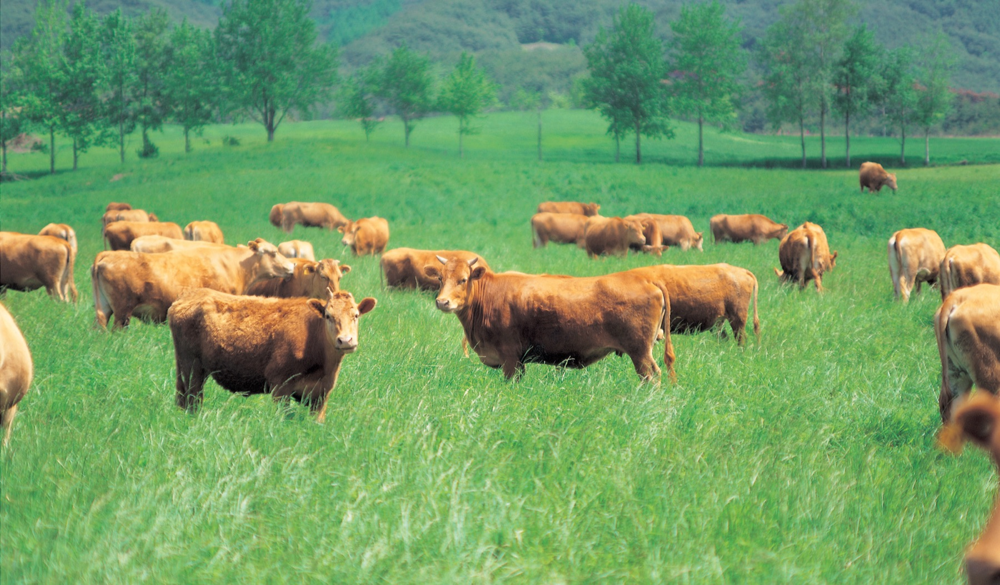
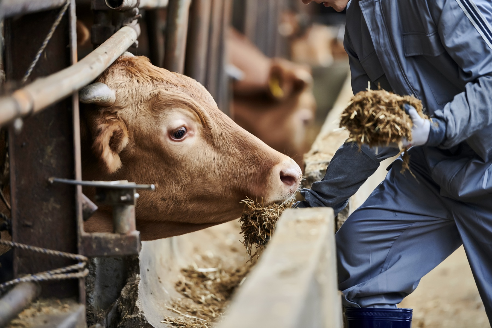
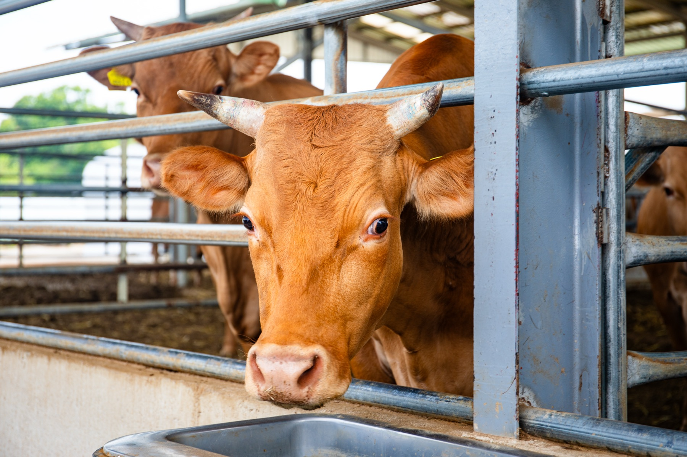

2026 MARU 목장
사양관리 리포트가 공개되었어요
사료·방역·출하까지 한눈에 보는 한 해의 기록
maru ranch
maru ranch
사료·방역·출하까지 한눈에 보는 한 해의 기록
MARU 프리미엄 한우 예약 판매
MARU 지역 상생 축산 프로젝트
넓은 방목지와 깨끗한 풀, 맑은 물로
소가 스트레스 없이 자라는 환경을 만듭니다

건강한 초원
정성 어린 사양관리매일 손으로 사료 상태를 살피고
한 마리 한 마리의 건강을 기록합니다
귀표 번호로 출생부터 출하까지
모든 이력을 투명하게 공개합니다

투명한 이력 관리